2017/0128Sat一昨日
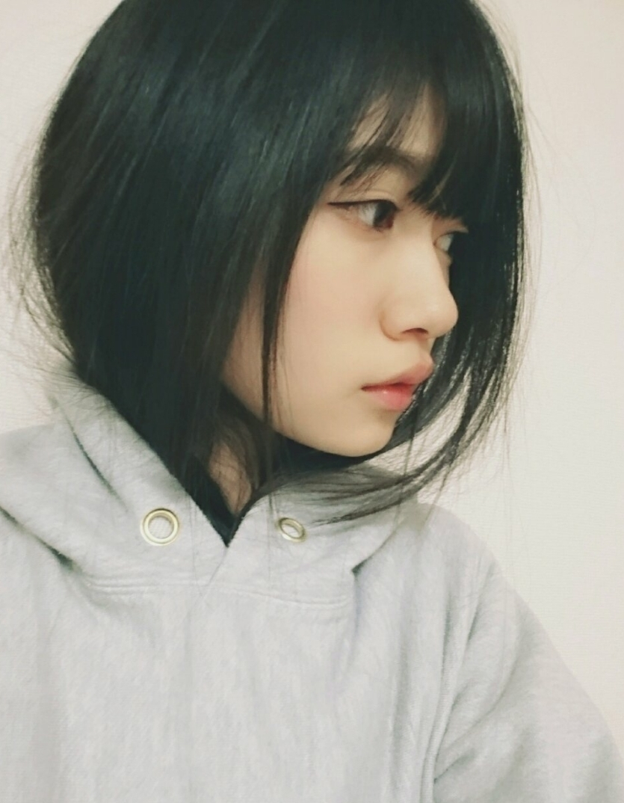
モバメで送った画像ですが、、、
ショート風です
今は切る予定はありませんので(..)
黒髪ロング人口がほぼ無なのでロングでいます
でも、いつかタイミングがあったら切ったり色々変化したいですねー(..)
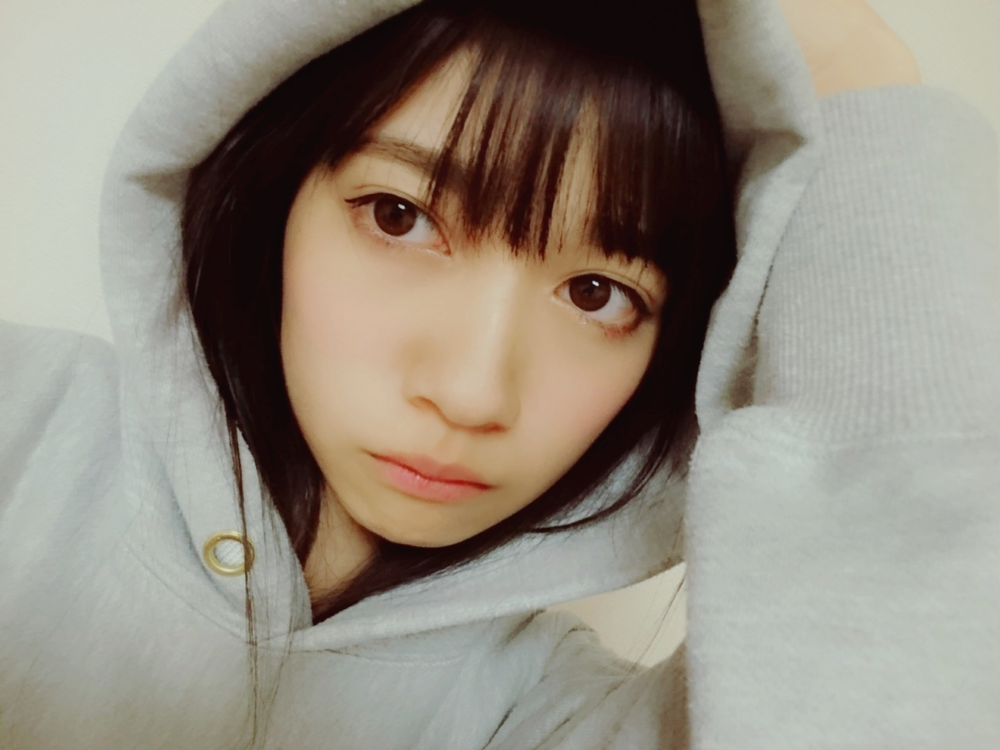
そう言えばお正月は
どこにも行きませんでした
旅行したかったけど、、、
根っからの
インドアなので(..)
今年こそはアクティブになりたい
初夢では無いけど
最近透明な四角い乗り物に乗りながら空を飛んでました。
割と低空飛行していて、
時たま街を歩いてる珍しがる人に傘で突かれそうになったり
ショベルカーに乗ってる人に追いかけられ、、、(..)
という謎の夢を見ました
乗り物に乗っていた感触があって固いというより柔らかい素材で出来てました
あ、夢の話ですよ(..)
おはようございます
こんにちは
こんばんは
寺田蘭世です
宜しくお願い致します✨
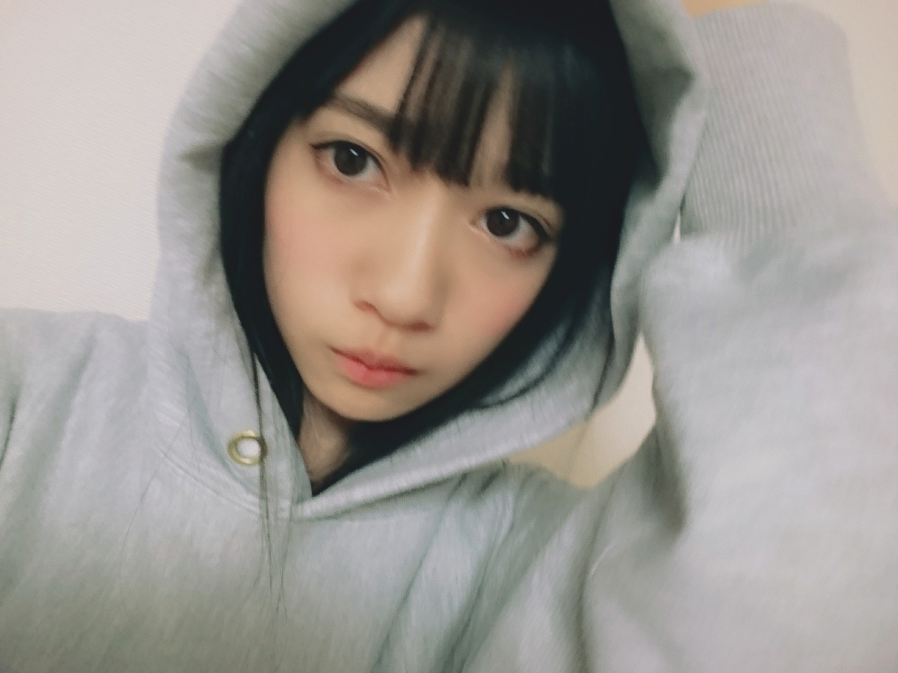
ぶれた。
●蘭世の今年の初笑いはなんだった？
▶ハブサービスさんのタイツネタで笑ったような、、、
あとは、ゆりあんレトリィバァさんのネタが大好きで
最近TVでお見かけするようになって凄く嬉しいです✨
毎回大爆笑です
●蘭世ちゃんはブログのコメント見てくれてますか？笑
▶ちゃんと全コメント見てるよー
これからも宜しくお願い致します(..)感謝
●冬ならではの楽しみって何ですか？
▶空気、あのなんとも言えないツンとした空気が好きです特に冬の朝
ふわふわしたもの布団に包まれる事(..)✨
●蘭世はアニメを、
リアタイor次の日観る派
それもと溜めて観る派？
▶溜めてみる派です
いつも録画が溜って溜って、、、
●らんぜが、日本人に生まれてよかったーって思う瞬間はどういう時??
▶お味噌汁m(_ _)m
●蘭世は、長期休みあったら何したい？？
▶ロシアに行く✨
友達がロシアにいて
でもね、最近連絡先消しちゃってもう、連絡を取る伝が無いんです、、、
だから、探す
探す、、、
●ねぇねぇ聞いて。
最近蘭世のブログ全部コメントしてる。笑
今年は蘭世のブログ全部にコメントする！
今年初めて持った目標。
▶コメント本当にありがとう！
私もいつも皆さんのコメント楽しみにしてるので嬉しいたけよ
目標を持つのはいい事だー(..)✨
目標達成って良きこと
一緒に色んなこと頑張りましょう✨
宜しくお願い致します
●蘭世ちゃんのファッションセンスがとても好きなんですが、参考にしてる雑誌やモデル等ありますか？？それとも映画のスタイリングとかから影響を受けてるんですか？？
▶わーありがとうございます✨
ファッションを褒められるのが何より1番嬉しいです
ネットでも暇さえあればお洋服の事ばかり調べてます
外国の方のスナップ写真は凄くインスピレーション？！を受けます
この色使いいいなーとか
雑誌も読みます
ファッション雑誌にも
乃木坂46のメンバーが載ってるものをみて
サイズ感こんな感じなのかなーとか予想したりします。
過去ブログのコメントの質問にも答えてます。
質問がある方は気軽にどうぞ
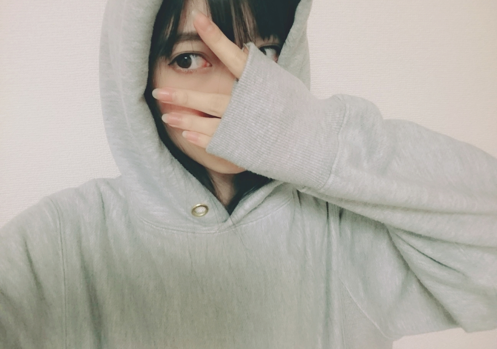
貼れる画像枚数には制限があるのだっ！
今年に入ってからのブログは短期間で沢山のコメント、、、✨
本当に有りがたき幸せです
こうやってコメント返しとかでお返しできればなと思っています
ありがとうございます(..)
そして、私も自分のブログのコメント欄に登場する事が多々あります
これは私が研究生だった頃にブログが決められた日しか投稿出来なかった時に少しでも皆さんに想いを伝えたいと思い、考えついたものです、、、(..)
今でもたまーに寺田蘭世ブログのコメント欄に登場してます
最近出没率高めなので
もしかするとコメント連番できるかもね、、、
これからも、公式ブログは
応援して下さる皆さんと
意見を交換し合える
大切な場として使いたいです✨
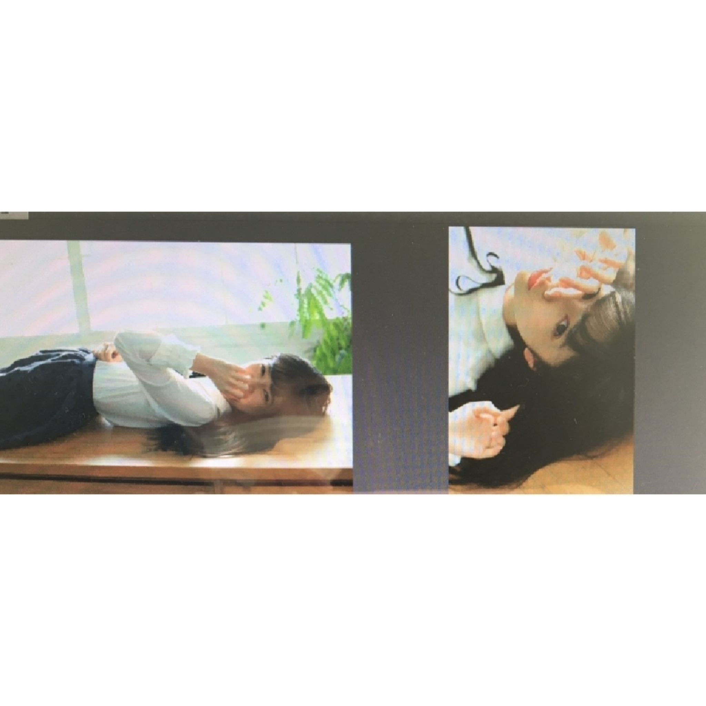
お知らせ
1/23アップトゥボーイ Vol. 251
1/30月刊エンタメ
2/4RiCE No.2 2017 winter号
2/6 Top Yell
ニッカンスポーツ・コム「NEWSがとまらんぜ」寺田蘭世
毎週金曜日配信
寺田蘭世が乃木坂46内や芸能界のニュースを貪欲にキャッチし、らんぜの独特な感覚でどんどん発信していきます！
最後まで読んで下さり
ありがとうございます✨
では、きっとまた
2017/01/28 14:24｜個別ページ｜コメント(1730)
2017/0121Sattamago
千と千尋の神隠し
皆さんはみてましたか？
色彩感覚が素敵で
いつ見ても色褪せないですよねジブリ作品は凄い。
何回見ても展開が分かってるのにソワソワする
その世界に入り込みすぎてね
なんで、「こんな無謀なことするの」とか
もう千と千尋の神隠しの世界の中に入っちゃうんです
私は、映画観てるといつもそこの世界に入っちゃってあわあわしちゃって心臓が持たないなー(..)
とりあえずハク様が素晴らしすぎて早くブログに書きたかったのです。
素晴らしい
私はしっかりハク様と呼ばせていただきます。
私もおにぎり食べたいと心の底から思いました。
おにぎり万歳ヽ(^o^)丿
壁ドンヽ(^o^)丿
あの位
自分の意思があって強く
まっすぐ生きてる人って憧れるなー。
おはようございます
こんにちは
こんばんは
いきなり、すみませんm(_ _)m
京都握手会
朝早くから並んで下さった皆様ありがとうございます
雪が降ってる中
本当にありがとうございます✨
手が冷えきってる方が
京都2日間沢山いらっしゃって
その度、この一瞬だけでも温まって欲しいと
精一杯握らせて頂きました。最終的に個別握手会では
手が冷たかった人には
カイロをペタっと
手 カイロ 手
とサンドして握手してました。
本当に本当にいつもありがとうございます(..)✨
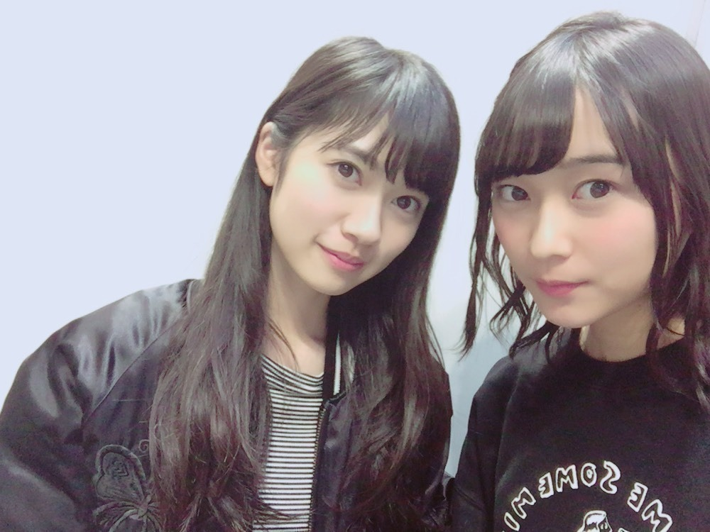
全国握手会ペアは絢音ちゃん
絢音ちゃんファンの皆様
ありがとうございました。
私も、絢音ちゃん大好きです。
でも、大好きって私が伝えても最近懐いてくれないの
諦めないよー
LIVEの方は
ブランコ
君に贈る花がない
サヨナラの意味
生田さんポジ（生田さん舞台頑張れ陰ながら応援してます！！！）
3曲参加しました✨
全国握手会のLIVEでパフォーマンス出来るのは有り難いしそのうえユニット曲を頂けたり
フルバージョンで披露する機会はほぼ無いので毎回噛み締めてやってます。
サヨナラの意味も参加できた事凄く嬉しく思います。
個別握手会
1部：ストレート
2部：巻きおろし
3部：巻きおろし
4部：ポニーテール
5部：三つ編み
私服
1､2部
3､4､5部
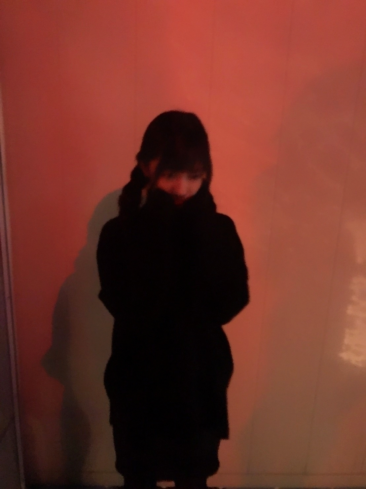
どの部もオールブラックをテーマにしました。
京都は初5部制でした
ここまでの道のりは当たり前のものでなくて
本当にさっきからこれしか言ってないんじゃないかって話ですが
本当に感謝しかありません
だから、これからも
素で心から楽しんでやりたいしその素直な気持ちを
感じ取っていただければと思います、、、✨
あんまり可愛い仕草とか
得意でないけど
何卒宜しくお願い致します(..)
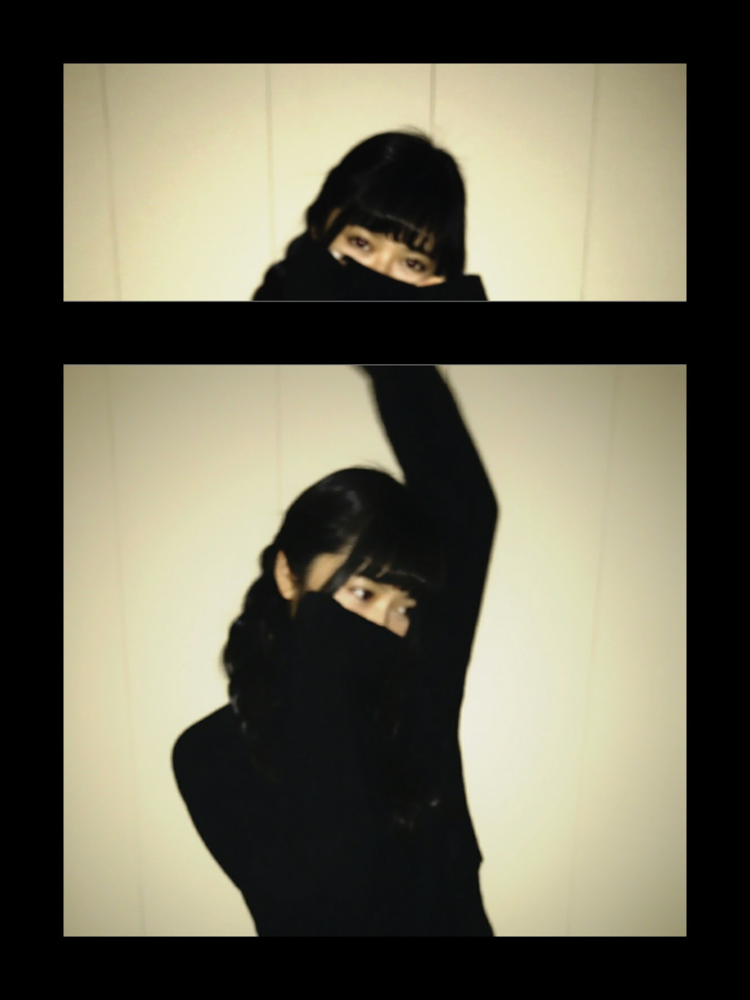
最後に受験生の皆さん
凄く応援してます
握手会でも
受験生なんですとか
就活でしばらく会えないかもーとか悲しいけど
皆の良い結果待ってます
いつか直接報告しに来てね✨
そして、こんな私ですが
1つだけアドバイス
数学的にはね
基本的に1+1=2
理数系の皆さん
1+1=100って答えちゃアカンからねー
数学だと正解を割り出さないといけないー
だから、私は数学とか答えがあるものが不得意なんです(> <)
でもね、
人生は計り切れないーのだ
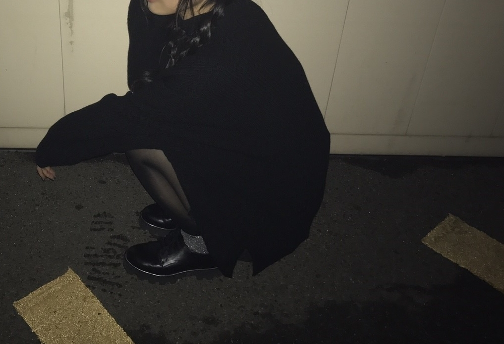
受験生の皆さん
目標に向かって頑張っている皆さん
悔い無く楽しんで下さい
最後まで読んで下さり
ありがとうございます✨
明日も握手会です
会場にお越しくださる皆様
更に、テラダレーンに来て下さる皆様
宜しくお願い致します✨
寒いので防寒はしっかりと
そして風邪予防のマスクや
手洗いうがいお忘れなく
風邪ひいていい事ないからね
私も喉弱いから握手会会場は乾燥しやすいし気をつけなきゃ、、、m(_ _)m
2017/01/21 21:30｜個別ページ｜コメント(1203)
2017/0113Fri赤白紫系
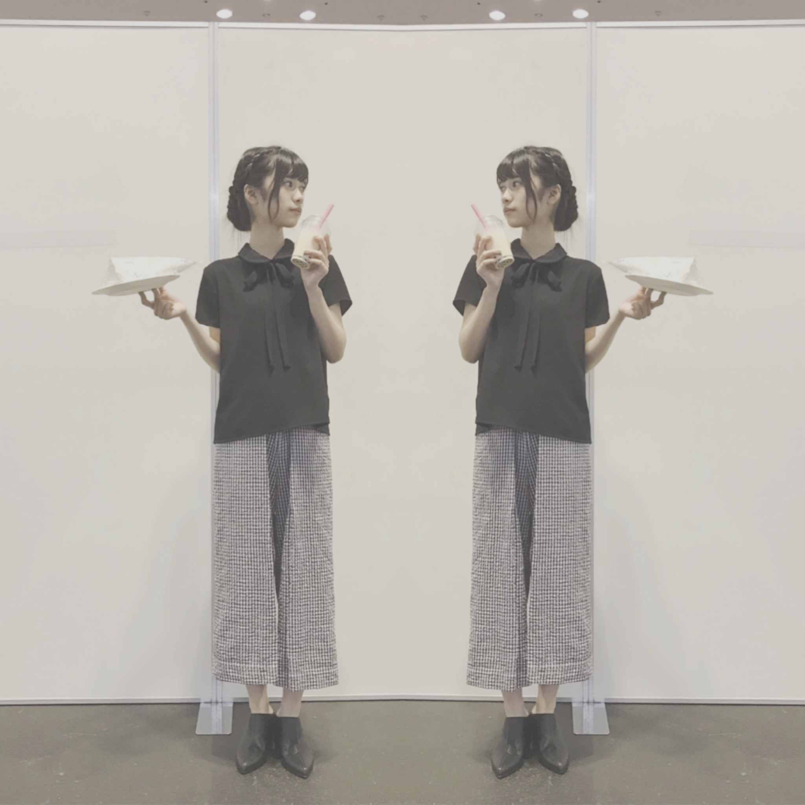
タピオカの旅に
出たいくらい
タピオカが大好きな飲み物なんです
そう、昔から、、、✨
食べ物はトマト
飲み物はタピオカ
唯一飽きの来ない
食べ物飲み物です
握手会場に
Cafeが来てくれて
たまにタピオカが
メニューにあるのですが
その日は
7杯くらいは
飲んでるかも(..)
春水堂さんは
やっぱり無敵
神宮でのLIVEのとき
一昨年も去年も
non-noさんが
差し入れでくださって
凄く私の
エネルギーになりました✨
タピオカのお話でした
皆さんはタピオカ
お好きですか？
ちなみに
何味が好きですか？
定番は
ミルクティーなのかな(..)
私のモバメでメールを見てくれてる方はタピオカの話題はタイムリーだよね。
タピオカ事件ね悔しかったよ(> <)
知らない人の為に簡単に説明するとお持ち帰りにして楽しみに取っておいたタピオカを落としてぶちまけたと言うお話です、、、
もう、1人だったけど半泣き状態でした
おはようございます
こんにちは
こんばんは
冒頭で話し過ぎました(..)
でも、そのくらい
タピオカ大好きなんです
そして、前回のブログ沢山のコメントありがとうございます✨
全部読んでますいつも
たまに、自分でもここまで読んだよーってコメントすることもあります
寺田蘭世 本物よりってコメントは本当に私本人です。
（真似して偽物が現れても
この寺田蘭世独特の文章は真似できないだろう、、、）
勿論、数ではないけど
わかりやすい形で皆さんの気持ちや愛情を感じられるので心配性の私としては
凄く安心感を与えてくれます。
よく、LIVEの前とかお仕事前にブログのコメントを読んでます。
これからも、どんな些細なことでもいいです
待ってます(..)✨
本当にいつもありがとうございます
LARMEさんの026が早くも楽しみなのです。
黒瀧まりあさん表紙で
レトロな雰囲気
色使いも赤メインで
とても好きな雰囲気ー✨
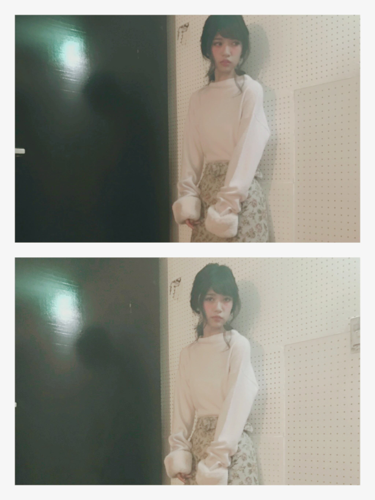
LARMEさんの
オフショット(..)
お洋服全部タイプでした
本当に幸せな時間でした
特に、BonBonさんは
私のツボです素敵✨
最近BonBonさんで
お洋服買いました
また、オフショット
載せますね✨
因みに、初めて
LARMEさんに載せていただいたときのオフショット
このお洋服今でもお気に入り✨
同じスタッフさんが撮影してくれたのですが
目に見える変化があるーって言って下さいました
自分で自分がわからないので意見を言って下さるのは
大変有りがたき(..)✨
これからも頑張るぞ
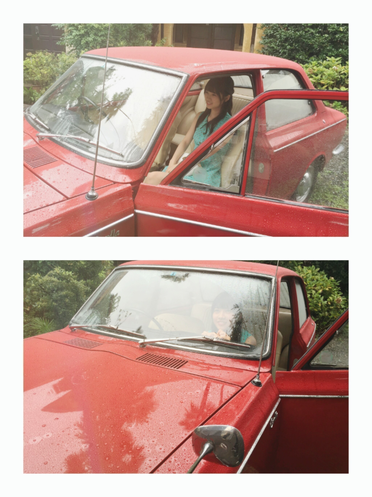
ドライブ(..)
最後まで読んでくださり
ありがとうございました✨
明日は京都握手会
明後日は個別握手会
何卒、宜しくお願い致します
風邪予防しっかりとっ！
手洗いうがい！
乾燥するのも良くないらしいので予防にマスク等！
あと、寒いらしいので
暖かくして下さい
おやすみなさい(..)✨
2017/01/13 20:00｜個別ページ｜コメント(1276)
2017/0103Tueそんなん大根やん
明けまして
おめでとうございます
今年、2017年も
何卒宜しくお願い致します✨
お正月は黒豆が大好きなのでいっぱい食べました
お餅は好きだけど
喉に突っかかったらどうしようとか考えるだけで
なんか緊張しちゃうから
食べるのが怖いですm(._.)m
極度の心配症です。
初夢は見た気もしますが
忘れてしまいました
思い出せなくて朝からもやもやしました
でも、富士山とかお茄子は出て来ませんでした
2017年は
自分の好きな事をもっとやりたい。
自由に表現したい。
自分の好きな物好きな事をしてるときが1番本来の自分をだせるし心の底から楽しんでいる人間って
他の人から見てもキラキラして見えると思います
だから、今年はそういう事もして新しい寺田蘭世を見て欲しいです。
乃木坂46に居なければ出来なかったような事を沢山経験してみたいです(..)✨
そして、何事にも
感謝の気持ちを忘れず
ファンの皆さんと
楽しいの気持ちを共有して
更にステップアップしましょー
果たして
トークショーは叶うかな

去年よりもっともっと
色んなことをしたい
活躍できますように、、、
酉っ✨
2017/01/03 16:18｜個別ページ｜コメント(1329)